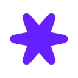
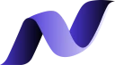
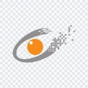

Trace Budget
Trace sampling that keeps every error and slow request, and lets routine traffic share what's left of a fixed budget. Cut observability spend by 60% without losing signal.



Built my first PC at 14 and have been part of PCMR ever since. That curiosity led to mobile development, starting with iOS and SwiftUI, then backend work with Vapor. Along the way came networking, two MikroTik certifications, and Flutter.
From there, the focus shifted toward DevOps and experimenting with a homelab and home servers. A fast learner who's always improving, I care about reliable systems, understanding how things work, and automating tasks that happen often enough to deserve it.
Currently deepening my knowledge of DevSecOps and site reliability engineering, while open to opportunities in those and similar roles. There is always another system to understand, a process to improve, or something new to try in the homelab.
2023 to now
Tech company, platform team
Own the platform everything else sits on: service templates, deploy pipelines, and the observability stack. Cut tracing costs by 60% with sampling that never drops the traces that matter.
2021 to 2023
Fintech scale-up
Built billing and webhook delivery for a product that grew 10x while I was there. Learned idempotency the expensive way, and survived my first real on-call rotation.
2019 to 2021
Early-stage startup
Third engineering hire. Shipped the first version of everything: API, schema, CI, and a deploy script held together with hope. Later replaced all of it, on purpose this time.
2017 to 2019
Digital agency
Client sites and APIs on tight deadlines. My first encounter with production, and with the pager.
2015
Internship
Turned an internship into a job offer and a lot of bugs into slightly fewer bugs.
Trace sampling that keeps every error and slow request, and lets routine traffic share what's left of a fixed budget. Cut observability spend by 60% without losing signal.